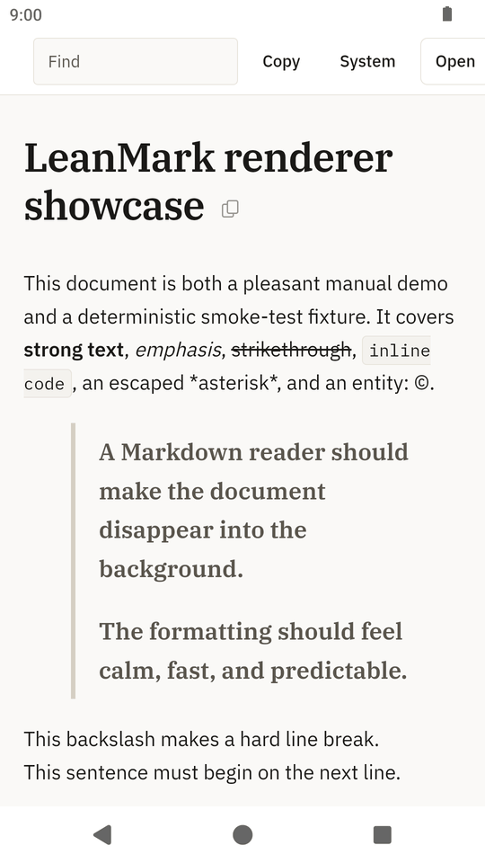
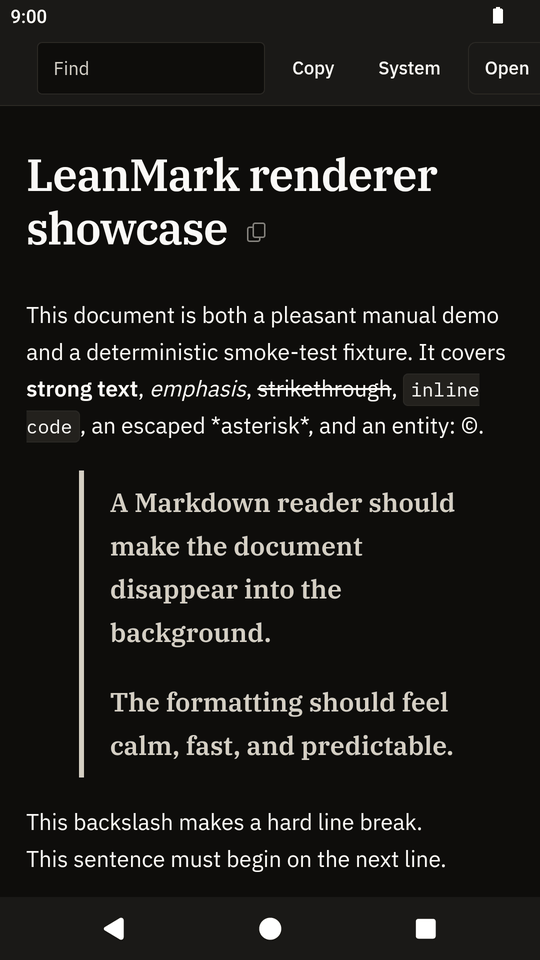

Android closed test
LeanMark for Android: read Markdown files on your phone.
LeanMark opens Markdown files for reading and shows them as formatted pages: headings, lists, task lists, tables, code blocks, and Mermaid diagrams drawn on the phone. Open a README, notes or a report from your file manager, a mail attachment or your downloads. It never changes the file.
LeanMark for Android is in a closed test on Google Play before its public release. Google needs testers who keep the app installed for 14 days. Use the Google account you have on your phone.
How to join
Join the test in three steps.
-
Join the testers group
Join the Lean Apps testers group on Google Groups with the Google account you use on your phone. The same group is used for the LeanDoc, LeanMark and LeanRows tests.
-
Become a tester
Then, on your phone, open the LeanMark tester page and tap Become a tester.
-
Install from Google Play
Install LeanMark from Google Play and keep it installed for 14 days. Google counts the testers who stay in the test for 14 days in a row before it lets the app go public.
If the tester page says the app is not available yet, Google is still reviewing the test; try again a day later.
Screenshots
LeanMark on a phone.


What it does
A viewer for Markdown files, nothing more.
Open a file from your file manager, from a mail attachment or from your browser's downloads with Open with, share a file to LeanMark, or use the Open button inside the app.
Features
- GitHub-flavored Markdown, with Mermaid diagrams you can expand to full screen, zoom and pan
- Find in the document
- Copy a section, or the whole file, as the original Markdown
- Pinch to zoom; follows the system font size
- Five themes: System, Light, Dark, and two softer dark themes, Dim and Dusk
- Links to websites open in your browser only when you tap them
Limits
- Files up to 32 MB.
- Files must be UTF-8. Other encodings show a message instead of garbled text.
- Images stored next to the Markdown file are not shown, because Android only gives the app access to the one file you open. Images embedded in the file as data are shown.
- Links to other Markdown files cannot be followed, for the same reason.
Privacy
No internet permission. No data collected.
LeanMark has no internet permission, so it cannot send or receive anything over the network. It asks for no permissions at all, and it has no analytics, no ads and no accounts. It reads the file you open and never changes it. It does not load remote images and does not run HTML or scripts from the document.
Read the privacy policy for the Lean Apps on Android. This page sets no cookies and loads no scripts.
Feedback
Tell me what does not work.
The app collects nothing, so reports have to come from you. Open an issue on GitHub with your Android version and phone model, or send private feedback from the tester page on Google Play. Never attach a private file: make a small file that shows the problem.
Things to try during the 14 days
- Open a Markdown file from the Files app, from a mail attachment and from your browser's downloads, and use the Open button in the app.
- Open a file with a Mermaid diagram and expand the diagram.
- Use Find, copy a section, switch between light and dark, and rotate the phone.
- Tap a link to a website and check that it opens in the browser.
Each Android release on GitHub also has the APK attached, for phones without Google Play.
Also from Lean Apps
LeanMark for Windows, Linux and macOS.
The desktop app is the same viewer for your computer, with the same reader page. Visit the LeanMark desktop site. The Lean Apps page lists all three apps.
-
LeanMark for Windows, Linux and macOS
The desktop Markdown viewer.
-
LeanDoc for Android
A Word document viewer, also in a closed test.
-
LeanRows for Android
A CSV and log file viewer, also in a closed test.